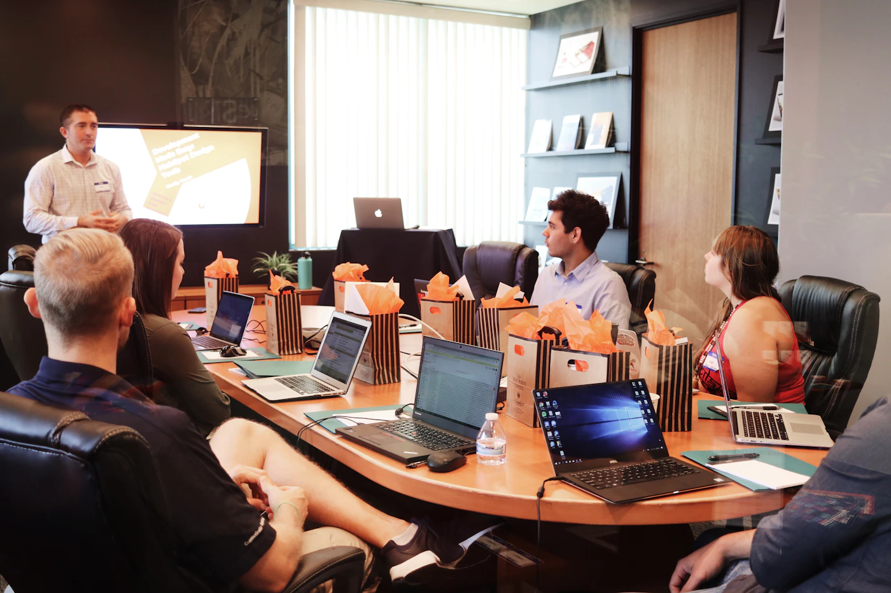

20. August 2026 · 10 Min.
ROI-Rechnung für AI Agents: Wann lohnt sich die Investition?
Break-Even nach 5 Monaten oder 2 Jahren? Konkrete ROI-Rechnung für AI Agents mit echten Zahlen aus dem Mittelstand.
Artikel lesen →Praktische Tipps zu KI-Automatisierung, Prozessoptimierung und Softwarelösungen

Break-Even nach 5 Monaten oder 2 Jahren? Konkrete ROI-Rechnung für AI Agents mit echten Zahlen aus dem Mittelstand.
Artikel lesen →
Sensible Daten lokal, Skalierung in Cloud. Wie Hybrid AI Systems das Beste aus beiden Welten vereinen.
Artikel lesen →
TechCrunch: "2026 bewegt sich AI von Hype zu Pragmatismus." Was das für Mittelständler konkret bedeutet.
Artikel lesen →
Über 500 LLM-Modelle verfügbar. Entscheidungsframework: Welches Modell passt zu Ihrem Use Case?
Artikel lesen →
Human-in-the-Loop, Confidence Thresholds, Rollback-Fähigkeit. Wie Sie AI Agents sicher einsetzen.
Artikel lesen →
Anthropic's neues Flagship-Modell. Halber Preis von Claude Fable 5, fast gleiche Intelligenz. Lohnt sich das?
Artikel lesen →
Abhängigkeit von OpenAI/Google vermeiden. Strategie für Vendor-unabhängige AI-Architektur.
Artikel lesen →
Copilot hilft. Agent erledigt. Der Unterschied zwischen Assistenz und Autonomie – mit Praxisbeispielen.
Artikel lesen →
LLM-Layer, Vector DB, Orchestration, Monitoring. Wie Sie Ihren AI Stack aufbauen – ohne Vendor Lock-in.
Artikel lesen →
GPT-5 kostet 12€/1M Tokens. Llama 3.3 (8B) kostet 200€/Monat Self-Hosted. Wann rechnet sich was?
Artikel lesen →
Moonshot Kimi nutzt 300 Agents über 4.000 Steps. Aber mehr Komplexität = mehr Fehler. Wo ist die Grenze?
Artikel lesen →
DeepSeek V4 Open Source, Moonshot Kimi K2.6 mit 300 Sub-Agents. Was können die chinesischen Modelle – und sollten Sie sie nutzen?
Artikel lesen →
Gemini 3.1 Pro führt Reasoning-Benchmarks an. Wann brauchen Sie starkes Reasoning – und wann reicht schnelle Inferenz?
Artikel lesen →
30% der Enterprises automatisieren bereits >50% ihrer Netzwerk-Operationen mit AI. Wie funktioniert das konkret?
Artikel lesen →
Beide Modelle kosten ~10-12€/1M Tokens. Welches ist besser für Coding, Reasoning, Automation? Ehrlicher Benchmark-Vergleich.
Artikel lesen →
AT&T's CDO: "Fine-tuned SLMs werden 2026 Standard." Warum kleinere Modelle oft besser performen als GPT-5 – und 80% günstiger sind.
Artikel lesen →
Zwei Unternehmen nutzen beide ChatGPT. Das eine ist AI-Ready. Das andere ist AI-First. Der Unterschied? Integration vs. Tool-Nutzung.
Artikel lesen →
OpenAI's GPT-5.5 ermöglicht AI Agents ohne Wrapper-Code. Desktop- und Web-Apps direkt bedienen. Was bedeutet das für Automatisierung im Mittelstand?
Artikel lesen →
Moonshot Kimi nutzt 300 Sub-Agents über 4.000 Steps. Wann Multi-Agent Systems Sinn machen – und wann nicht.
Artikel lesen →
100% aller Enterprises planen 2026 AI Agent Expansion. Praxisbeispiele für 50-Personen-Betriebe – ohne Buzzword-Bingo.
Artikel lesen →Was ist 2026 nach EU AI Act wirklich verboten? Welche Pflichten haben Unternehmen beim Einsatz hochriskanter KI?
Artikel lesen →OpenAI hat Codex Security vorgestellt. Was bedeutet das für sichere interne Tools, Codequalität und KI-gestützte Entwicklung?
Artikel lesen →Anthropic hat Claude Sonnet 4.6 mit 1M Token Kontext vorgestellt. Wann bringt das echten Nutzen – und wann ist es Marketing?
Artikel lesen →Google hat Gemini 3.1 Flash Live vorgestellt. Was bedeuten moderne Voice Agents für Service, Disposition und Kundendienst?
Artikel lesen →
OpenAI hat GPT-5.4 mini und nano vorgestellt. Was bedeuten kleinere, günstigere KI-Modelle für Automatisierung im Mittelstand?
Artikel lesen →Unternehmen geben Millionen für KI aus – aber Daten werden immer noch manuell kopiert. Das Problem: Fehlende Integration.
Artikel lesen →100% aller Enterprises planen 2026 Expansion von AI Agents. Gartner: 40% aller Apps mit Agents bis Jahresende.
Artikel lesen →Unternehmen haben ChatGPT, Copilot und drei weitere KI-Tools. Trotzdem: Rechnungen werden manuell gebucht. Woran liegt das?
Artikel lesen →
MIT-Studie zeigt: 95% aller KI-Projekte scheitern – nicht an der Technologie, sondern an Strategie und Integration.
Artikel lesen →
Wie mittelständische Unternehmen in Berlin mit KI-gestützten Prozessen Zeit sparen, Kosten senken und Wettbewerbsvorteile sichern.
Artikel lesen →Von OCR-Software bis KI-Lösung – welche Methode lohnt sich für Ihr Unternehmen? Ehrlicher Vergleich mit ROI-Berechnung.
Artikel lesen →Von E-Mail-Verarbeitung bis Dokumentenautomatisierung – diese 5 Prozesse lassen sich in Speditionen heute bereits automatisieren.
Artikel lesen →
ChatGPT beantwortet Fragen. AI Agents erledigen komplette Aufgaben selbstständig. Gartner prognostiziert: 40% aller Enterprise-Apps bis Ende 2026.
Artikel lesen →Seit Februar 2026 gilt der EU AI Act. Risikoklassen, Pflichten und praktische Schritte zur Compliance.
Artikel lesen →
Wie Unternehmen Rechnungen, Verträge und E-Mails automatisch analysieren – mit ROI-Berechnung.
Artikel lesen →6 Bereiche mit messbarer Zeitersparnis – von Dokumentenanalyse bis Kundenbetreuung.
Artikel lesen →
Von Rechnungsverarbeitung bis Chatbots – 5 Anwendungen, die sich sofort rechnen.
Artikel lesen →
70% aller KI-Projekte scheitern. Die Top 5 Fehler – und wie Sie sie vermeiden.
Artikel lesen →
30€/Nutzer – Kosten, Features und Alternativen im ehrlichen Vergleich.
Artikel lesen →5 Strategien um KI-Kosten um 60-80% zu reduzieren – ohne Qualitätsverlust.
Artikel lesen →
Datenschutz, Kontrolle, Unabhängigkeit – warum Unternehmen auf On-Premise setzen.
Artikel lesen →
60€/Nutzer oder 50.000€ einmalig? Ein ehrlicher Vergleich ohne Marketing-Blabla.
Artikel lesen →Von Chatbots bis Sentiment-Analyse – schnellere Antworten, geringere Kosten.
Artikel lesen →